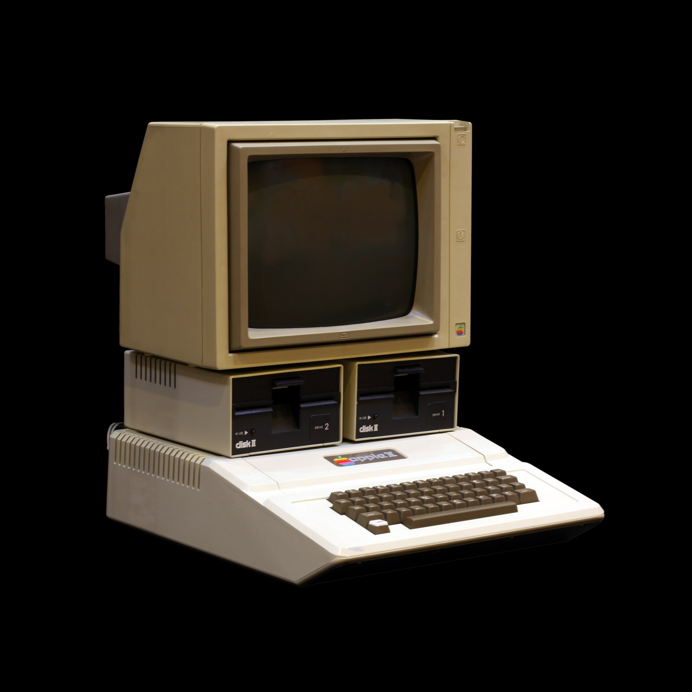

The Autopsy Report · Device #066
The Apple II
The machine that turned Apple from two guys in a garage into a computer company. Eight expansion slots, a 6502, and a design so open that Steve Wozniak published how the whole thing worked. Wozniak's system description
What is this thing?
The Apple II is Apple's first mass-produced personal computer — the machine that funded everything Apple did for the next decade. Where the C64 was a closed box with great chips, the Apple II was an open architecture: eight expansion slots along the back of the motherboard, a published memory map, and a reference manual that explained the circuitry instead of hiding it. If you wanted a disk drive, a printer card, or a modem, you bought a card and plugged it into a slot. That openness built an entire third-party industry. Original model overview · Wozniak's system description
The line: the Apple II (1977), the II+ (1979), the IIe (1983), the IIc (1984), the IIGS (1986), and the IIc+ (1988). Our representative is the 1977 original — the one in the photo — and every chip claim below belongs to it unless labeled otherwise. Model history
Not yet on our bench
No Apple II has sat on our bench yet. No board photos of our own, no slot-card inventory, no power-up test. Everything below comes from Apple's own contemporary documentation — the Apple II Reference Manual, Wozniak's published system description — and reputable hardware histories. When a II (or a IIe, the most common survivor) lands on the bench, this page gets its second act.
A short history
- 1977The Apple II ships: $1,298 with 4 KB of RAM, $2,638 with the full 48 KB. A 6502 at about 1 MHz, color graphics, and a keyboard in the case — a complete computer, not a kit. Original model overview · comp.sys.apple2 FAQ
- 1979The II+ arrives: same hardware, new ROMs — Applesoft BASIC in ROM and an autostart ROM that tries to boot a disk on power-up. Many II owners upgraded just the ROMs. comp.sys.apple2 FAQ
- 1983The IIe: the best-selling Apple II, with a proper keyboard and 64 KB standard. Model history
- 1984The IIc: the portable-ish II — no slots, everything built in, in a sleeker case. Model history
- 1986The IIGS: 16-bit graphics and the Ensoniq sound chip — the II line's technicolor finale. Model history
- 1988The IIc+: the last of the line. Model history
The outside
The original Apple II is a beige wedge with a built-in keyboard — no separate keyboard cable, no monitor included. On the back edge of the board, inside the case: two 3.5 mm cassette jacks (data in, data out) for an ordinary audio tape recorder, a 16-pin game I/O connector for paddles and joysticks, and the video output. The defining feature is inside: eight expansion slots in a row along the back of the motherboard. Slot 0 is special — reserved for memory/language-card expansion — while slots 1 through 7 take peripheral cards: disk controllers, serial cards, printer interfaces, and the legendary Mockingboard sound card. Each slot gets its own decoded slice of the memory map, so cards don't need their own address-decoding logic — a Wozniak simplification that made third-party cards cheap to build. Apple II Reference Manual · Wozniak's system description

The board
The original II runs a MOS 6502 at about 1 MHz. Base memory is 4 KB, expandable to 48 KB on the motherboard (64 KB with the Language Card in slot 0). The ROMs hold the Monitor program and Integer BASIC — turn it on and you land in the Monitor; later models boot to BASIC. Built in, with no cards: a keyboard interface, a cassette interface (about 180 bytes per second, using audio tones a cheap recorder could handle), four analog paddle inputs plus three switch inputs and four annunciator outputs on the game connector, and a speaker driven by toggling a single memory location — one-bit sound, and an entire generation of beeps. Color graphics and hi-res graphics are on the board from the start; Wozniak's design generated color with a minimum of chips, which is part of why the machine was affordable. comp.sys.apple2 FAQ · Wozniak's system description
Under the microscope: the chips
The original II's board is mostly TTL logic and DRAM around one famous CPU — the custom-silicon era came later in the line. Confirmed means Apple's contemporary documentation or Wozniak's published description says so.
| Chip | What it does | How we know | Dig deeper |
|---|---|---|---|
| MOS 6502 @ ~1 MHz |
The main processor — the 8-bit heart of the machine. | Confirmed Apple's Reference Manual and the comp.sys.apple2 FAQ. | Apple II Reference Manual |
| 4–48 KB DRAM 64 KB with Language Card |
Working memory. The $1,298 base model shipped 4 KB; full expansion was 48 KB on-board. | Confirmed Original-model specifications. | Original model overview |
| Monitor + Integer BASIC ROMs | The built-in software: the Monitor (a machine-code debugger, essentially) and Apple's first BASIC. | Confirmed The FAQ documents the ROM split between the II and II+. | comp.sys.apple2 FAQ |
| TTL video & I/O logic | Discrete chips generating the video timing, cassette tones, paddle timing, and speaker clicks — Wozniak's minimal-chip design. | Confirmed Wozniak's own system description details the design. | Wozniak's system description |
A note on later models: the IIe and IIc consolidated much of this logic into custom chips (the MMU and IOU), and the IIGS added the Ensoniq sound chip — but those are different boards with different chips, and we don't attribute them to the 1977 machine. Exact TTL part numbers and board revisions await the bench. Model history
The government's file
Honest gap: the Apple II predates the modern FCC ID system, and we have not verified an FCC ID for the 1977 original. Home computers of this era were regulated, but the grant records that survive in searchable form don't give us a verifiable ID for this model — so we claim none. If a bench unit's label tells a different story, this section gets rewritten with a photo of it.
Listening, not knocking
Our posture: we listen, we don't knock. The Apple II is the friendliest possible subject for this philosophy — its "debug interface" is the Monitor program in ROM, a documented machine-code monitor Apple shipped to every user, and the published memory map that tells you exactly which address toggles the speaker ($C030) or reads a paddle. Documenting public interface locations from the manufacturer's own manual is the whole of this section — and this one passes the red-team test: these are manufacturer-published interface locations, not bypasses, extractions, or lock defeats, and the operations they describe (clicking a speaker, reading a knob) are harmless by construction. No bypasses, no extractions, no firmware redistribution — the ROMs are Apple's, the manual is public, and the addresses are printed in it. When a II reaches our bench: power-up to the Monitor prompt, paddle-input checks, and cassette-jack signal observation. Listening only. Apple II Reference Manual
What we didn't do
- No bench work yet: no board photos of our own, no power-up, no slot-card inventory.
- We claim no FCC ID — none verified.
- We did not dump or redistribute any ROM. Apple's ROMs are Apple's.
- Nothing here touches credentials, keys, or locked functionality. The II has none.
By the numbers
- Line: Apple II — II (1977), II+ (1979), IIe (1983), IIc (1984), IIGS (1986), IIc+ (1988) Model history
- Representative: 1977 original — MOS 6502 @ ~1 MHz, 4–48 KB RAM, Integer BASIC + Monitor in ROM Original model overview
- Expansion: 8 slots (slot 0 special), each with its own decoded memory slice Apple II Reference Manual
- Built-in I/O: keyboard, cassette in/out, 16-pin game connector (4 paddles, 3 switches, 4 annunciators), speaker, video out Wozniak's system description
- Launch price: $1,298 (4 KB) / $2,638 (48 KB) Original model overview
What awaits the bench
- A II or IIe of our own — board revision, our photos, a slot-by-slot inventory.
- Power-up to the Monitor prompt, documented keystroke by keystroke.
- TTL chip inventory off a real board — the discrete logic Wozniak was famous for minimizing.
- A label photo to settle the FCC question honestly.
- One day: a Disk II controller card and a real floppy boot, the way millions experienced it.
Words to know
Every term this page uses, in plain English. No prior knowledge required.
- 6502
- The 8-bit processor at the heart of the Apple II. Simple, cheap, beloved.
- Expansion slot
- A connector on the motherboard where you plug in a card to add features — disk drives, printers, modems, sound.
- Monitor program
- The Apple II's built-in machine-code monitor — examine memory, run code, disassemble. A debugger, shipped in ROM to everyone.
- Integer BASIC
- Apple's first built-in BASIC, in the original II's ROM. The II+ replaced it with Applesoft (floating-point) BASIC.
- Language Card
- An expansion card for slot 0 that added RAM and let the II switch between BASICs.
- Paddle
- A knob controller (like Pong) that the II reads as a variable resistance on its game connector.
- Annunciator
- A one-bit output on the game connector — software-controlled on/off signals for external gadgets.
- Applesoft BASIC
- Floating-point BASIC, standard in ROM from the II+ onward.
Sources & confidence
- Original specs, prices, RAM sizes: the original-model overview. High confidence.
- Slots, cassette, game I/O, memory map: Apple's Reference Manual. High confidence.
- Design details (180 bytes/sec cassette, paddle inputs, speaker, slot decoding): Wozniak's published system description. High confidence.
- Model list and years: the 35th-anniversary model history. High confidence.
- FCC: no verified ID — stated as unknown, honestly.
- Anything not listed here is unknown until the bench says otherwise. We'll say so, out loud, when that's the case.
The device photo is a freely licensed stock photo, credited in its caption — not a photo of our own unit, because we don't have one yet.
Legal note. BareBoard is an educational project. Everything on this page is our own writing based on public documents — our summaries, our analysis. We don't publish, host, or distribute firmware, keys, passwords, or credentials. Product names and trademarks belong to their respective owners and appear here only to identify the hardware. If you believe anything here infringes your rights, contact us and we'll address it promptly.